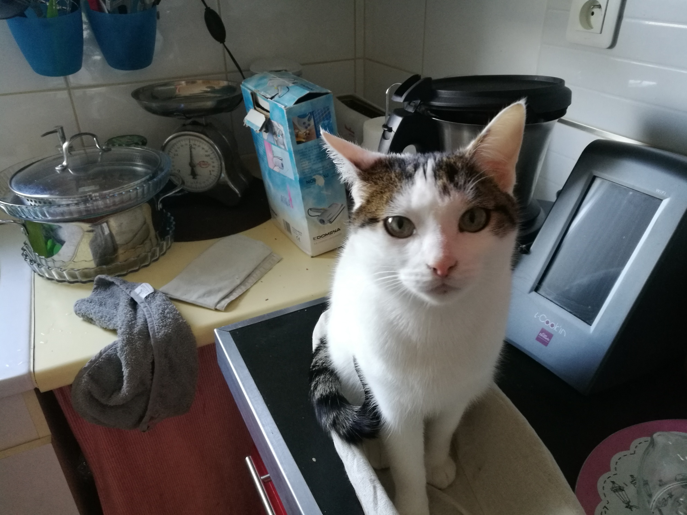
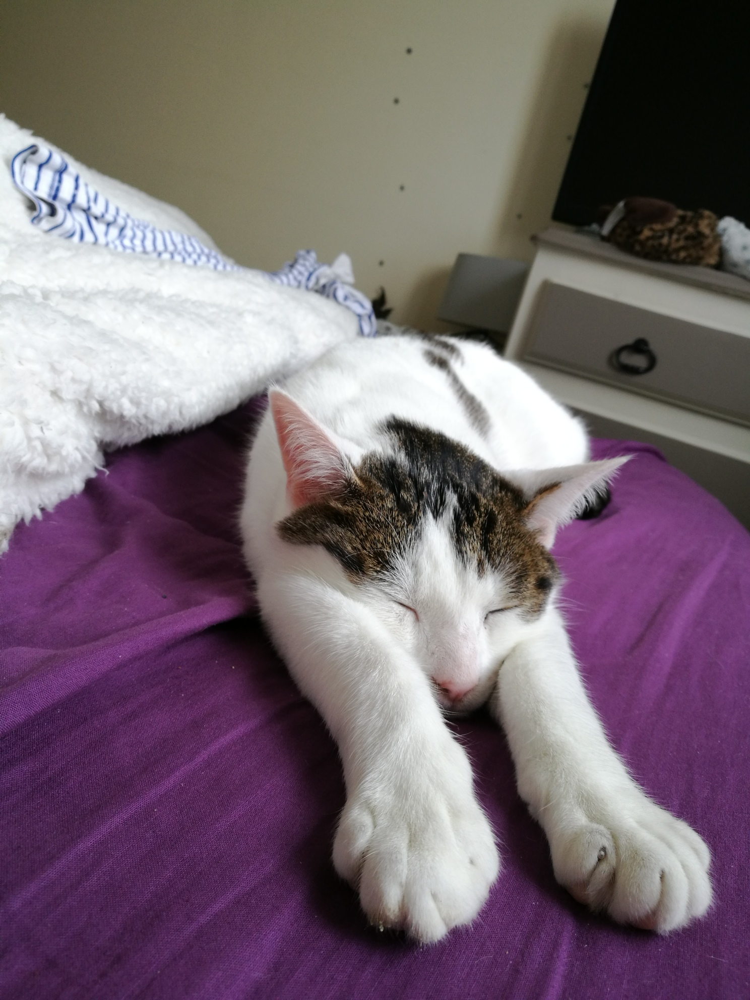
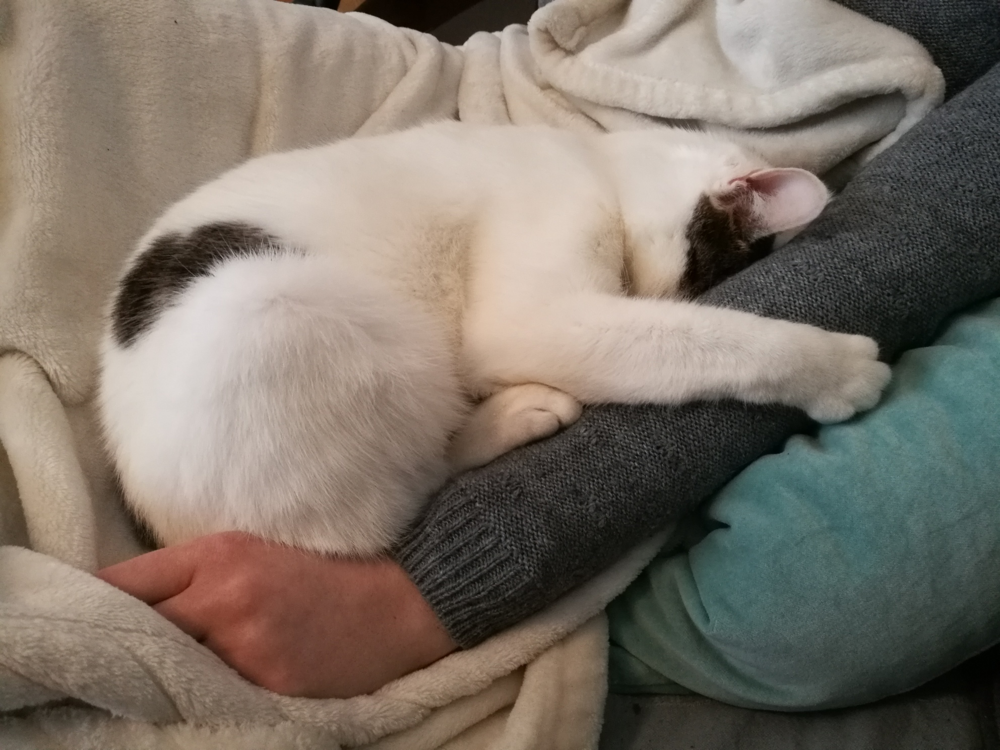

Mes débuts
Ma vie de chat a commencé en Vendée, où j'ai, au plus jeune âge, adopté deux humains bien sympatiques (i.e. utiles), me nourrissant et me grattant derrière les oreilles à chacun de mes miaulements. Au début, j'étais cantonné à l'intérieur, obligé de m'occuper avec mes divers jouets (sopalin, papier toilette, ...) et mes quelques possessions (i.e. toute la maison et son contenu).
Histoire de meubler un peu ce premier article, voici le contenu wikipédia relatif à la chasse, ma première passion :Le chat est essentiellement carnivore. Son métabolisme a besoin de taurine présente dans la viande, qui est un dérivé d’acide aminé qu’il ne peut synthétiser en quantité suffisante. Une carence en taurine entraîne chez le chat des troubles oculaires, cardiaques, des déficits immunitaires et des problèmes de reproduction chez les femelles. Deux stratégies de chasse peuvent être distinguées : la stratégie mobile (ou chasse à l’approche), comportant une phase d’approche de la proie, suivie d’une phase d’attaque et la stratégie stationnaire (ou chasse à l’affût), qui comporte une phase attentive et immobile, suivie d’une phase d’attaque. Les méthodes de chasse utilisées ne semblent pas spécifiques à l’espèce chassée. Pour tuer sa proie, le chat mord généralement à la nuque, en brisant ainsi la colonne vertébrale. Les proies les plus courantes sont de petits rongeurs mais ils s’attaquent aussi aux lézards, aux petits oiseaux, aux insectes, aux lapereaux et parfois à des proies moins conventionnelles comme la grenouille, le hérisson ou l’écureuil. Opportuniste, le chat ne rechigne pas à s’attaquer aux déchets. La chasse peut simplement se dérouler dans une optique de jeu. Chez le chaton, on observe des jeux de chasse comme chez les autres félins, avec un rôle social similaire.
La sieste !
Ah mon activité favorite, la sieste ! Ayant la capacité féline extraordinaire de pouvoir m'endormir n'importe où, je profite de celle-ci pour marquer mon territoire et signaler aux humains (un brin envahissant) que chaque objet succeptible de m'accueillir pour un somme m'appartient. Ces lieux me permettent le repos bien mérité après mes diverses activités extérieures (chasse aux souris, aux oiseaux, aux grenouilles, aux taupes, ...) ainsi qu'après mes conflits avec mes concurrents locaux (que font ces autres chats dans mon jardin ???). D'ailleurs, voici un extrait de l'article de wikipédia vantant les bienfaits de la sieste :
La sieste permet de regagner de la concentration et de l'énergie, et met de bonne humeur. La sieste a des effets bénéfiques non négligeables sur la santé. Elle permettrait une diminution significative de près d'un tiers de la mortalité due aux maladies cardio-vasculaires. Les résultats d'une étude montrent que les sujets les plus éveillés et les plus performants l'après-midi sont ceux qui ont pratiqué la sieste. Une sieste courte permettrait même de faire un gain de une à deux heures de sommeil par nuit. En effet, la sieste est composée essentiellement de sommeil lent profond, et ce sommeil est de loin le plus réparateur pour l'organisme.
La sieste est fortement conseillée par de nombreux spécialistes du sommeil. Elle permettrait de réduire significativement les risques d'accident de la circulation. Les statistiques nationales indiquent que la majorité des accidents se produisent au cours de périodes chronobiologiques de somnolence maximale (entre 2 et 6 heures du matin et entre 13 et 15 heures). C'est pendant ces périodes que se comptent les accidents les plus graves pour toute tâche qui exige une grande vigilance et une grande efficacité. Certains employeurs en ont d'ailleurs bien compris l'intérêt – en termes de productivité notamment –, et aménagent un espace à cet effet pour ceux qui le désirent, au calme et dans le noir.
La sieste serait également bénéfique pour la mémorisation : d'après une étude, les personnes qui dorment dans l'après-midi retiennent beaucoup plus de tâches. D'autres études confirment même que non seulement elle augmenterait les performances intellectuelles de 20 %, mais aussi qu'elle libère notre créativité. Cette pratique est utile pour lutter efficacement contre le stress accumulé dans la journée, et favorise la récupération musculaire et mentale. Or, on ne compte plus les études ayant établi un lien entre les effets néfastes du stress et l'incidence de la mortalité résultant de maladies coronariennes, ce qui pourrait avoir indirectement des effets positifs sur l'espérance de vie.
En 2007, en France, un « programme d'action sur le sommeil » (PAS) visant à réhabiliter la sieste est mis en place par le ministère de la Santé et des Solidarités. Le plan est composé de 4 axes : informer et éduquer le grand public, enfants et adultes ; informer et former les professionnels de santé ; auditionner les structures existantes et donner la priorité au financement de réseaux ville-hôpital et de centres d’exploration du sommeil ; proposer des recommandations sur les psychotropes, tranquillisants et expérimenter la sieste en entreprise. Mais la pratique de la sieste fait face à deux facteurs de la vie moderne, atténuant les historiques axes nord-sud et est-ouest qui en traçaient la carte mondiale : d'une part, la société de marché qui impose des horaires continus et, d'autre part, les progrès de la climatisation dans les pays chauds. Faire une sieste d'une heure serait le temps le plus optimal pour le cerveau alors que des siestes plus courtes ou plus longues ont moins d'effet
Les humains
La cohabitation avec mes deux humains m'a toujours semblé facile. En effet, même s'ils ne comprennent pas toujours tout (sur la photo, je ne fais pas un câlin, je me suis juste endormi en déclarant ma possession sur le bras de mon humaine), ils sont toujours prêts à remplir ma gamelle de croquettes. La communication s'est tout d'abord avérée difficile, mais ils ont finalement compris le sens de mes miaulements et ronronnements ! D'ailleurs, saviez-vous que :